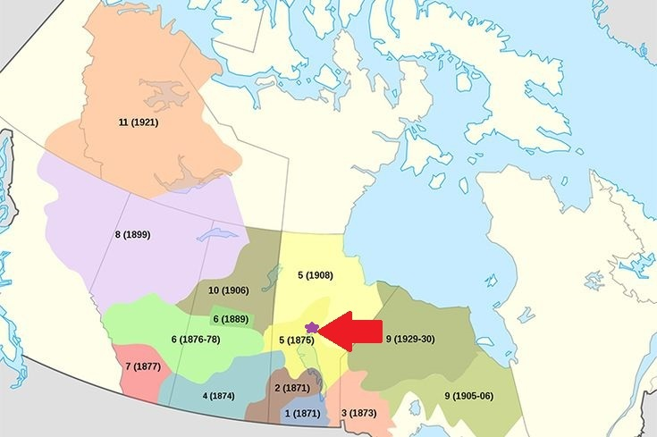

What is Treaty 5?
A long time ago, in 1875 and 1876, an important agreement was made called treaty 5. This is a treaty that was signed by the government of Canada and the Indigenous peoples from around Lake Winnipeg!
why was treaty 5 signed?
A long time ago the Indigenous people of upper Manitoba wanted to make a treaty with the Canada's government. Around this time other groups were making treaties, and they had heard that and wanted their own treaty. With other treaties they could get help getting things, like foods and tools, so they also wanted a treaty. They were also looking for a better place to live because the land around their homes wasn't good for farming. They needed help, especially since they were struggling to get enough food. At first the government did not want to make a treaty with them but soon after they decided to create one.
This is Where the Treaty is Located!
And it was signed at a place called the 'Norway House'. Which is what the star is.